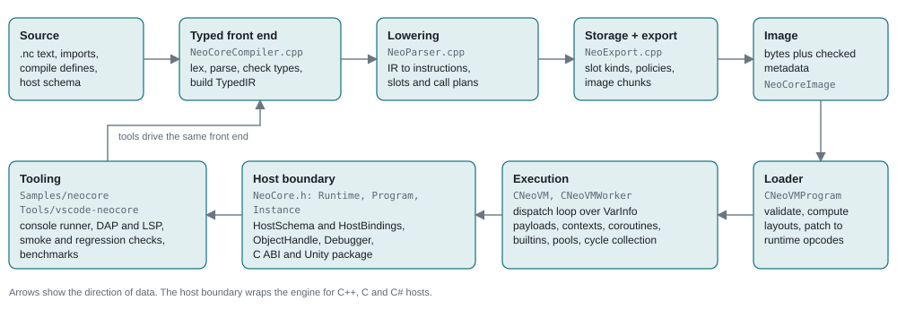
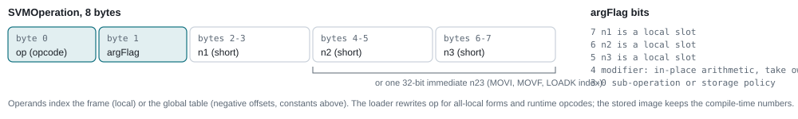
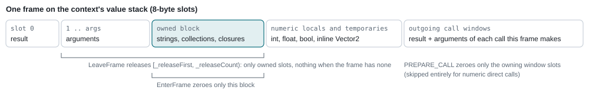
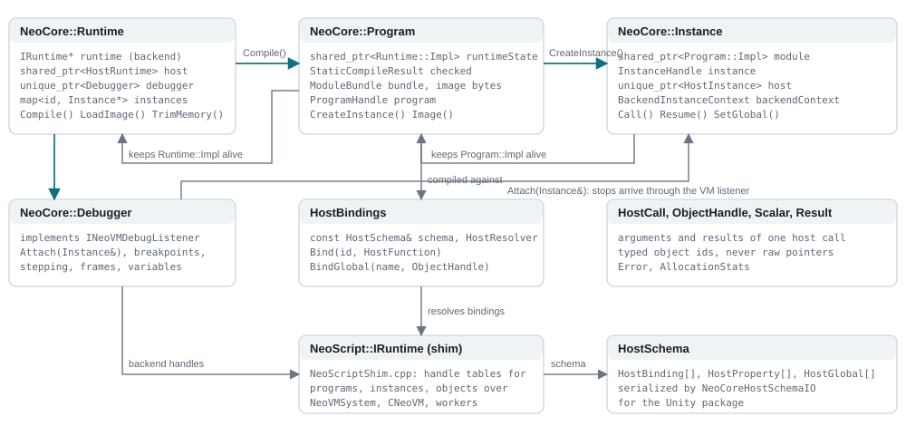
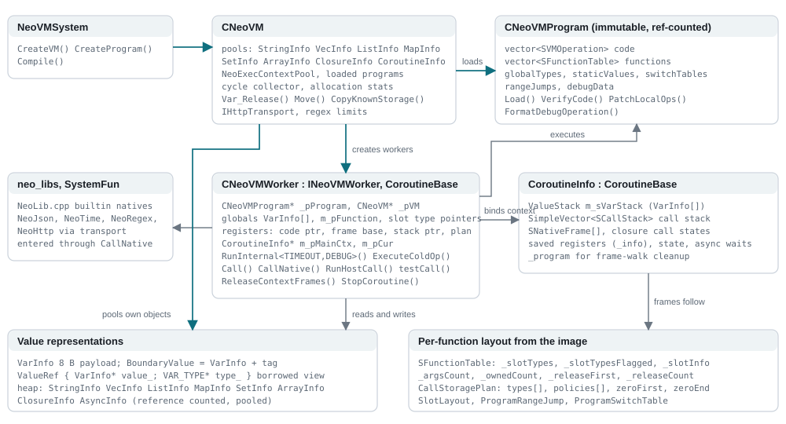
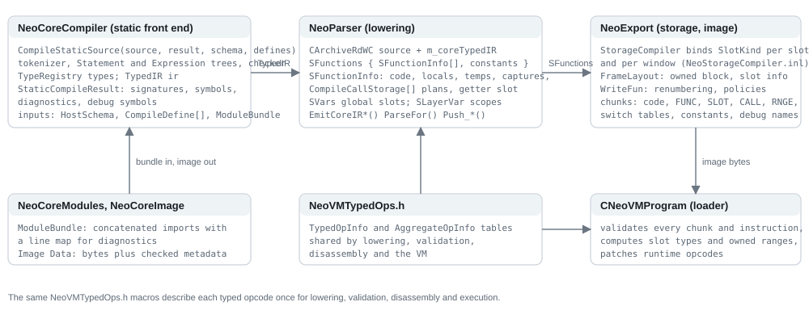

01Pipeline
Five stages hand plain data structures to each other. No stage keeps pointers into another stage's state after the hand-off, which is what lets the console compile without running, the loader validate images produced earlier, and hosts load an image without the front end.

Three decisions shape the rest of this page.
Checked before lowered. The typed front end rejects a program before any instruction exists, so lowering never infers a type; it reads the typed IR and the signatures the front end recorded.
The compiler owns storage. Frame layouts, call windows and copy and release policies are decided at compile time and serialized. The loader validates them. The VM never writes a type tag into a frame slot.
Untagged payloads. A VM slot is eight bytes. Types live in the instruction, in an immutable per-function table, or in the tagged boundary values that collections and hosts use.
02Typed front end
NeoCoreCompiler.cpp holds the complete static language: a tokenizer, a recursive-descent parser that builds statement and expression trees, and a checker that resolves names, types and conversions. Its output is StaticCompileResult: the TypedIR, function and global signatures, debug symbols and the diagnostics list. Compile-time definitions and the optional host schema are inputs. Imports are resolved beforehand by NeoCoreModules.cpp, which concatenates module sources into a ModuleBundle and keeps a line map so diagnostics point at the original file.
| Class | Role |
|---|---|
TypeRegistry, TypeDesc | Interned type identities: scalars, strings, vectors and quaternions, lists, maps, sets, typed arrays, structs with StructField lists, function types, host object types and builtin objects. A TypeId is an index; the kind decides storage later. |
TypedIR, IRFunction, IRNode | The checked expression graph. Each function records parameter and return types; each node records its value type and operands, so lowering emits fixed numeric instructions, selectors and typed element access without inference. |
HostSchema, HostBinding, HostProperty, HostGlobal | Host functions, properties and globals with exact signatures and binding ids. The checker treats them as part of the language; the loader and runtime validate calls against the same ids. Schemas serialize for the Unity package. |
NeoCoreBuiltins.h | The builtin surface the checker knows: string, list, map, set, array, math, time, JSON, HTTP, coroutine and system entries with their types. |
NeoCoreDiagnostics.h, NeoCompileLimits.h | Diagnostic records with source spans, and the fixed compile limits (argument counts, slot counts, literal sizes) that both the front end and lowering enforce. |
03Lowering, storage inference and export
Lowering reuses the NeoScript parser machinery (NeoParser.cpp, NeoTextLoader.h) as an instruction emitter. The source is re-read through CArchiveRdWC, but typed constructs are emitted from the TypedIR attached to the archive: numeric expressions, scalar writes, calls and returns come from the IR with exact signatures, ordered arguments and explicit value copies. Per-function state lives in SFunctionInfo (code buffer, locals, temporaries, captures, call plans) under SFunctions; globals live in SVars.
- Call plans. Each call site records a
CompileCallStorageplan with its argument sources, result slot and the code position at which the plan becomes active. A direct call whose window holds only payload values emits noPREPARE_CALL, and the last computed argument writes straight into the window slot. - Getter folding. A function whose whole body returns one global is remembered when it is finalized; later argument-less calls to it become a copy of that global.
- Storage inference.
NeoStorageCompiler.inlwalks the emitted instructions and the call plans until no slot kind changes, binding every local, temporary, global and window slot to aSlotKind. A conflict is a compile error that names the slot and both kinds. - Export.
NeoExport.cpppermutes each frame so owned slots form one block after the arguments, stamps the copy or release policy on everyMOV,LOADKandVAR_CLEAR, renumbers operands to frame slots and writes the image chunks.

04Image format and loader
An image is a byte buffer stamped with NEO_VER from NeoConfig.h. Every change to opcodes, layouts or validation bumps the version, and the loader refuses older images with a message instead of guessing. NeoCoreImage pairs the bytes with the checked metadata a host needs to bind the program without recompiling. CNeoVMProgram::Create runs three passes:
- Load reads the chunks into
SFunctionTablerecords,CallStoragePlans, switch tables, range descriptors, constants and the global type table. - VerifyCode checks every instruction: operand ranges against the frame, policy bytes against declared kinds, jump targets, plan indices and call signatures.
- PatchLocalOps rewrites the code for execution: all-local operand forms, static-string map reads, one-byte runtime opcodes for the numeric families, integer immediate forms, local copy and immediate-store forms, and typed range branches. These opcodes never appear in a stored image; the disassembler maps them back.
A loaded program is immutable and reference counted. Several VMs, instances and threads share one program.
05Virtual machine
CNeoVM is the engine instance. It owns the allocation pools for strings, vectors, lists, maps, sets, typed arrays, closures, coroutines and async requests, the execution-context pool, the loaded programs and the cycle collector. CNeoVMWorker is one execution engine over a VM: it holds the current program, the globals of an instance, the active context and the registers of the running frame. Each activation runs inside a CoroutineInfo context from NeoExecContextPool; the main context and user coroutines share one representation, so sleep, yield, time slices and breakpoints only park a context.
Dispatch loop
RunInternal<TIMEOUT, DEBUG> switches on the opcode byte of the current instruction and keeps only the frequent instructions inline: copies and clears, branches and loops, calls and returns, the runtime numeric opcodes, typed element access and map lookups. Every other opcode goes through ExecuteColdOp, a separate function with its own switch. Keeping the loop small is what lets the compiler hold the worker pointer in a register and lay out each handler as one block that ends in the dispatch jump. Handlers live in NeoVMWorker_Handlers.inl (generic), NeoVMWorker_Typed.inl (numeric, vector, array and container) and NeoVMWorker_Move.inl (copies and script calls).
Frames and calls

Script calls push an SCallStack record with the return address, frame base and the caller's function index; natives run through CallNative with the plan that describes their window. Errors and cancellation enumerate the saved frames (ForEachContextFrameSlot) through the program's layouts to release owned values exactly once and then zero the used stack range. There is no per-frame runtime table and no high-water sweep.
Builtins, libraries and memory
NeoLib.cpp implements the builtin natives behind the neo_libs tables. NeoJson.cpp, NeoTime.cpp, NeoRegex.cpp (vendored PCRE2) and NeoHttp.h (through a host-supplied IHttpTransport) back the library modules. Heap objects are reference counted; containers that can form cycles are tracked, CollectCycles frees unreachable groups, and TrimMemory returns empty pool pages to the system.
06Values and storage
| Representation | Where it lives | Type information |
|---|---|---|
VarInfo (8 bytes) | Frame slots, globals, constants, closure captures, typed vector arrays | The instruction, the function's slot table or the call plan. Never a tag in the slot. |
BoundaryValue (VarInfo plus a one-byte tag) | List, map and set entries; host transfers; native scratch values; GC work lists | Its own tag. |
ValueRef (payload pointer plus type-byte pointer) | A borrowed view created only at boundaries: collections, natives, conversions, the debugger | The pointed-to byte. For a fixed slot it is a read-only copy of the declared type marked with NEOS_TYPE_READONLY, so a view can never write a tag into a frame. |
| Heap objects | StringInfo, VecInfo, ListInfo, MapInfo, SetInfo, ArrayInfo, ClosureInfo, CoroutineInfo, AsyncInfo, pooled by CNeoVM | Reference counted; copy and release follow the storage policy carried in the instruction or layout. |
Nullability follows the type: numbers, vectors, quaternions and structs never hold null; strings, collections, function values, coroutines and host objects use a zero payload for null. Structs are value types stored as lists and copied on assignment. Vectors with three or four components share VecInfo storage with copy-on-write; two-component vectors are inline.
07Public API and host boundary
NeoSource/NeoCore.h (namespace NeoCore) is the embedding API. A Runtime owns the backend engine, a HostRuntime that resolves host bindings, and an optional Debugger. Runtime::Compile runs the front end and lowering and returns a Program, which keeps the checked result, the module bundle, the image bytes and the backend program handle. Program::CreateInstance produces an Instance with its own globals, a HostInstance for per-instance host objects and the handle used to call script functions with Scalar arguments and Result values. Hosts never see VarInfo; values cross the boundary as BoundaryValue conversions in NeoCoreValueBoundary and NeoCoreHostBridge.
- Bindings.
HostBindingspairs aHostSchemawith a resolver and functions keyed by binding id. Receivers are typed ids validated on every access; borrowed pointers cannot survive reentry or external deletion. The rules are in HostBindings.md. - Backend shim.
NeoScriptShim.cppimplements the backend-facingIRuntimeoverNeoVMSystem,CNeoVMand the workers, keeping handle tables for programs, instances and registered objects so the public API never exposes engine pointers. - Debugger.
Debuggerattaches to an instance, implementsINeoVMDebugListenerand exposes breakpoints, stepping, stack frames and variables. The DAP server in the console sits on top of it. - C ABI and Unity.
Unity/NeoCore/NeoCoreC.his the C header over the same API;Unity/com.neocore.unityis the C# package with managed value wrappers, schema import and callbacks.
08Tooling, samples and tests
| Component | Location | Notes |
|---|---|---|
| Console runner | Samples/neocore | neocore --file, --check, --asm, --debug; sample and regression modes (--smoke, --bench-check, --compiler-error-regression, --pooltrim-check); the stdio --dap and --lsp servers. ConsoleHost.cpp provides the host schema the samples use. |
| Benchmarks | Samples/bench | bench.nc (timed) and check.nc (checksums only) with the Lua and C++ references. Results and method: FourWayBenchmark.md. |
| Mini game | Samples/neocore/minigame | A small C++ host that binds a schema and runs a script per frame. |
| VS Code extension | Tools/vscode-neocore | Highlighting, completion and diagnostics through the LSP mode; debugging through the DAP mode. |
| Tests | Tests | C++ regressions under CTest (storage, typed ops, collections, hosts, images, modules, debugger) and Python protocol and CLI regressions. Linux builds and the Android NDK syntax check guard the non-Windows paths. |
09Class relationship diagrams
Public API

Virtual machine core

Compiler

10Source map
| Area | Files | Responsibility |
|---|---|---|
| Public API | NeoCore.h/.cpp, NeoCoreHost*.h/.cpp, NeoCoreInstanceContext.h, NeoCoreValueBoundary.h/.inl, NeoCoreValues.inl, NeoCoreDebugger.h/.inl, NeoCoreDebugAccess.h, NeoCoreConsoleAccess.h, NeoCoreOptions.h | Runtime, Program, Instance, host bindings and schema, value conversion at the boundary, debugger, console and debug access points. |
| Front end | NeoCoreCompiler.h/.cpp, NeoCoreTypes.h/.cpp, NeoCoreIR.h, NeoCoreBuiltins.h, NeoCoreDiagnostics.h, NeoCompileLimits.h, NeoCoreModules.h/.cpp, NeoCoreImage.h/.cpp, NeoCoreTextFile.h, NeoCoreScriptHost.h | Static language, type registry, typed IR, builtin surface, limits, module bundling, image container. |
| Lowering and export | NeoParser.h/.cpp, NeoTextLoader.h/.cpp, NeoExport.h/.cpp, NeoStorageCompiler.inl, NeoNumberLiteral.h, NeoArchive.h | Instruction emission from the typed IR, storage inference, frame layout, image writing. |
| Program and VM | NeoVM.h/.cpp, NeoVMInternal.h, NeoVMProgram.h/.cpp, NeoVMWorker.h/.cpp/.inl, NeoVMWorker_Handlers.inl, NeoVMWorker_Typed.inl, NeoVMWorker_Move.inl, NeoVMWorker_Var.inl, NeoVMTypedOps.h, NeoVMError.h, NeoConfig.h, NeoNumeric.h | Loader and validation, dispatch loop and handlers, calls and frames, errors, opcode tables, image version. |
| Heap objects | NeoVMList.h/.cpp, NeoVMMap.h/.cpp, NeoVMSet.h/.cpp, NeoVMArray.h, NeoVMVector.h, NeoVMHash.h, NeoVMMemoryPool.h, NeoQueue.h, UTFString.h, NeoStringLimits.h | Collections, typed arrays, vector storage, hashing, pools and string utilities. |
| Libraries | NeoLib.cpp, NeoLibDCall.h, NeoJson.h/.cpp, NeoJsonVendor.cpp, NeoTime.h/.cpp, NeoHttp.h, NeoRegex.h/.cpp | Builtin natives, JSON, time, HTTP transport interface, regular expressions. |
| Backend shim | NeoScript.h, NeoScriptShim.cpp | The IRuntime interface and its implementation over the engine with handle tables. |
| Hosts and tools | Samples/neocore, Samples/neocore/minigame, Samples/bench, Unity/NeoCore, Unity/com.neocore.unity, Tools/vscode-neocore, Tests | Console and servers, sample host, benchmarks, C ABI and Unity package, editor extension, regressions. |
The typed VM migration is ongoing. StaticTyping.md lists the implemented subset and remaining milestones, and TypedStorage.md records the current storage rules; keep this page in step with both when the pipeline or ownership changes.